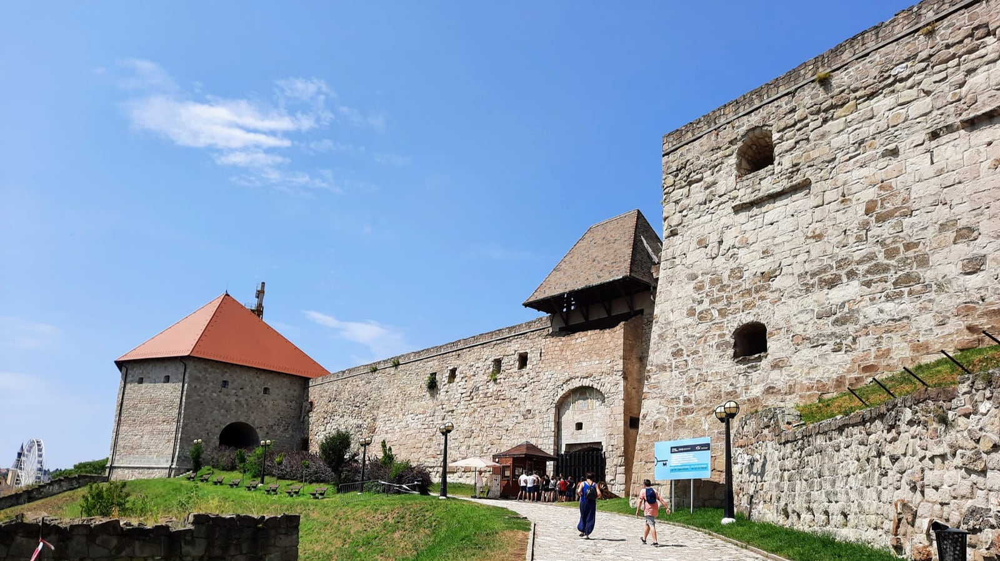
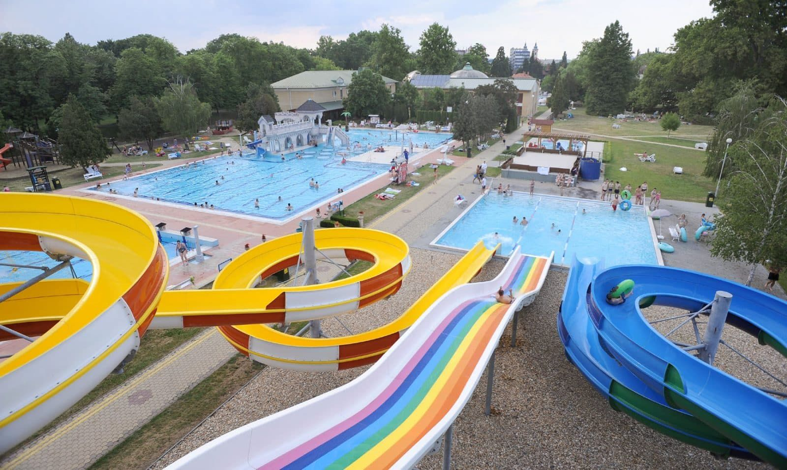
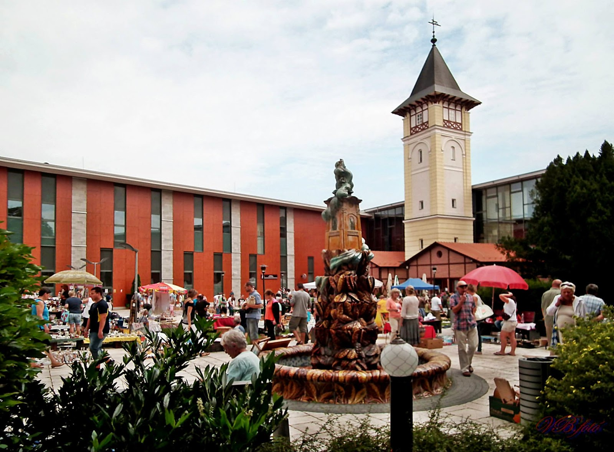
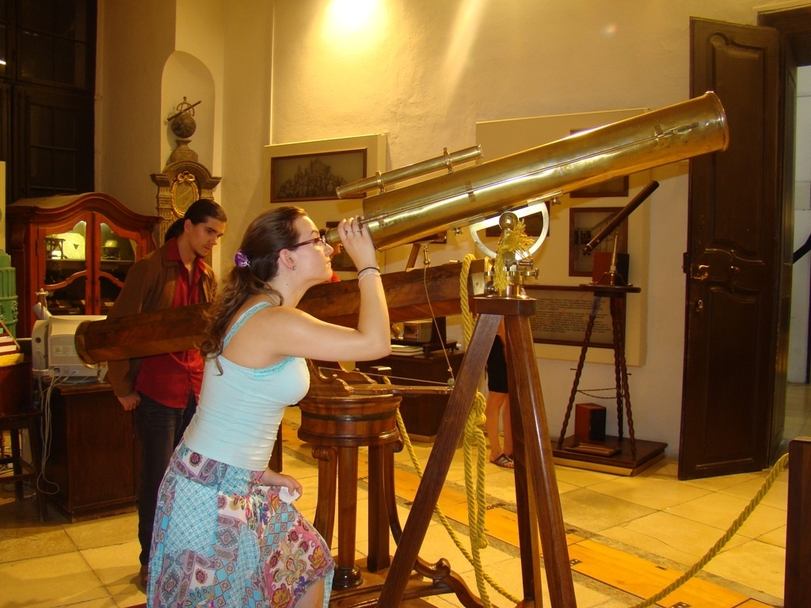
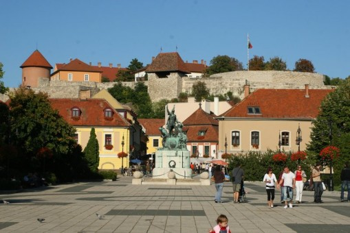

Dobó István tér
Egerről
Eger megyei jogú város az Észak-Magyarország-régióban, az Eger-patak völgyében, a Bükk-vidék délnyugati szélén; Heves megye és az Egri járás székhelye. A 2011-es népszámlálás adatai szerint Észak-Magyarország második legnépesebb városa.
Programok
Várfal nézés/Múzeum látogatásA Várfalra való felmenés/nézés ingyenes A múzeum látogatás felnőtteknek: 2400Ft diákoknak: 1200Ft. 15 fős vagy azt meghaladó csoportok részére elérhető a csoportos jegy, ami 5% kedvezményt ad. |
 |
StrandAz egri strandon 13 medence található, felnőttek és diákoknak is egyaránt élvezhető program lehet. A felőtt jegy: 3200Ft a diák jegy: 2600Ft. további infok |
 |
SzépasszonyvölgyIngyenes program. És mitől izgalmas célpont a Szépasszony-völgy? Attól, hogy nincs még egy ilyen hely az országban, ahol egy helyen ilyen sok pincét lehetne meglátogatni. |
 |
Agria parkAz Agria park egy üzletekkel teli park, ahol a diákok szabadon elmehetnek vásárolni a saját pénzükből. Emellett ez a bevásárlóközpont próbálja meg újrateremteni a piactér hangulatát. |
 |
CsillagvizsgálóProgramok a Csillagvizsgálón belül: Barna György Optikatörténeti Kiállítás, Varázsterem, Planetárium, Csillagászati Múzeum és egyéb előadások. Felnőtt jegyár: 1900Ft, diák: 1350, csoportos jegy: 12000Ft/10 diák |
 |
VárosnézésA városban a főbb látványosságokat érdemes megtekinteni, mint például: Egri Bazilika, Dobó István szoborcsoport, Dobó István tér, Érsekkert, stb... |
 |
Szállások
Belvárostól 10-15 perc sétára az EGRI VÁR felett városra néző panorámás helyen található. Zárt kertes parkosított udvar kis halastóval. Befogadóképessége: 45 fő. 5000Ft/fő. további infokért kattintson a képre |
A panzió Eger csendes, kertvárosi részén helyezkedik el. A városközpont és a Szépasszony-völgy kb. 2 km-re található. A panzió távolsága a vasútállomástól 650 méter, a helyi járat megállójától 200 m. 6000Ft/éj reggelivel: 11500Ft/éj további infokért kattintson a képre |
A motel és kollégium Eger központjától gyalogosan 10 percre, a vasútállomástól 5 percre található. Csoportok, osztályok számára olcsó, színvonalas szálláslehetőség és étkezés biztosított. 4 ágyas szobák esetén 7200Ft/éj, de vannak más szobák is. további infokért kattintson a képre |
Utazás
A Keletiből 1:30~2 óra alatt lehet leérni Egerbe. A jegyár 1500~2000Ft/fő. Ez azt jelenti, hogy oda-vissza kb.:3500Ft/fő. további infok
1, apartman |
Gyalog: 19 perc busszal: 10 perc (3410-es busszal 2 megálló, utána 5 perc séta) Pontos cím: Eger, Legányi Ferenc u. 14, 3300 további infók |
2, panzió |
Gyalog: 29 perc busszal: 3 perc séta az állomástól, majd a 14-es busszal 5 megálló a Tűzoltó térig, utána 6 perc séta a szállásig Pontos cím: Eger, Servita u. 56, 3300 további infók |
3, motel |
1 perc sétára van a vasútállomástól Pontos cím: Eger, Vasútállomás 1, 3300 |
Programtervek
- Várfalnézés
- Strand
- Szépasszonyvölgy
- Agria park
- Csillagvizsgáló
- Városnézés
Ha bármi probléma adódna, keressék a +36 20 540 8618-as telefonszámot, vagy írjanak e-mailt:
sari.sarimate08@gmail.com
skirstof710@gmail.com
kishunorattila17@gmail.com